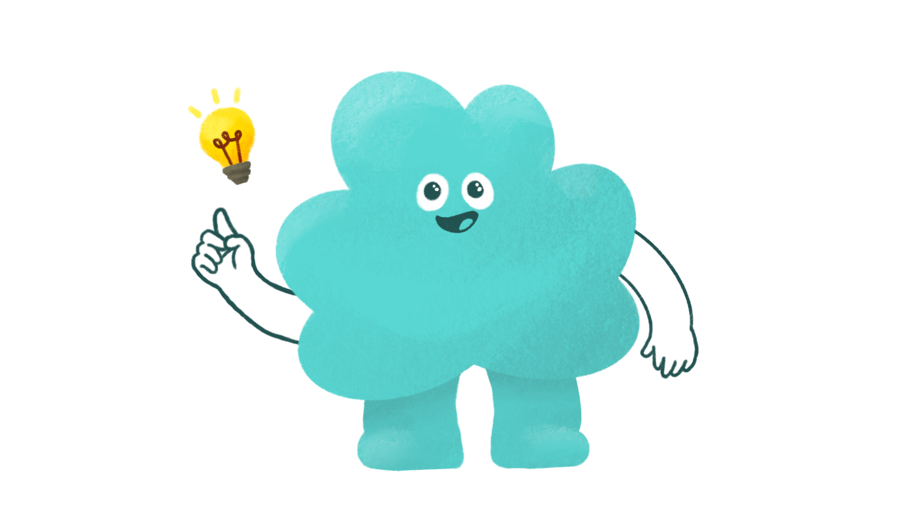

Meet AI with New curriculum
새로운 AI 교육과정을 연구하고 실천하는 교사 연구회, M.A.I.N. 입니다.
우리의 비전
M.A.I.N.은 인공지능 시대를 살아갈 학생들에게 필요한 핵심 역량을 길러주기 위해 존재합니다. 우리는 창의적이고 실용적인 AI 교육 커리큘럼을 개발하고, 현장에 적용하며, 그 성과를 공유함으로써 대한민국 AI 교육의 발전에 기여하고자 합니다.

안녕하세요! M.A.I.N.의 마스코트 '메이니'입니다.
새로운 아이디어가 번뜩이는 즐거운 AI 교육을 함께해요!